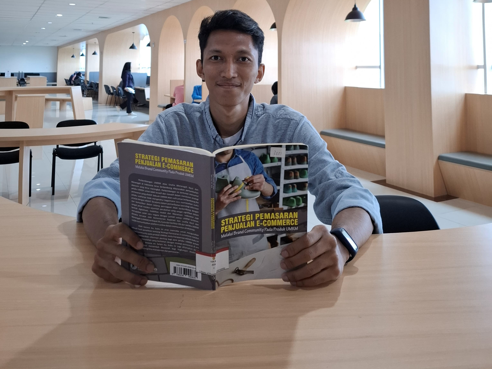

Abstrak

Perkembangan UMKM atau Usaha Menengah Kecil dan Menengah di Indonesia terus berkembang dikarenakan pertumbuhan ekonomi yang terus meningkat. Perkembangan ini tentunya menuntut pelaku UMKM untuk lebih kreatif dan inovatif dalam
menyusun strategi pemasaran yang efektif. Sebuah UMKM akan sulit untuk berkembang jika pelaku usahanya tidak mengetahui bagaimana cara memasarkan suatu produk dengan efektif. Terutama dalam pemanfaatan teknologi informasi dan
komunikasi dalam bidang perniagaan telah berkembang dengan sangat pesat melalui sejumlah perubahan yang sangat signifikan dalam bentuk digitalisasi, mobilitas modal dan liberalisasi. Indonesia juga merupakan salah satu negara
dengan jumlah sektor UMKM terbesar, dimana tercatat oleh Kementerian Koperasi dan Usaha Kecil dan Menengah (UMKM) terdapat 59,2 juta dan berkisar 8% dari pelaku UMKM sudah memanfaatkan platform online dalam memasarkan produknya.
Oleh karena itu, buku ini akan mencoba untuk menguraikan sebuah hasil penelitian tentang Strategi Pemasaran E-commerce melalui Brand Community pada produk UMKM, tentu harapannya adalah buku ini dapat memberikan informasi penting
bagi para pelaku UMKM terkait dengan permasalahan yang berkaitan dengan strategi pemasaran di era digital seperti dewasa ini. Selain itu, buku ini juga diharapkan dapat bermanfaat dan menambah khazanah bagi lingkungan akademik,
terutama dibidang ilmu manajemen dan pemasaran.
Kesimpulan

Buku ini membahas membahas bagaimana strategi yang baik dalam melakukan pemasaran dan juga penjualan e-commerce melalui brand community pada produk umkm. Ada banyak hal yang dibahas dalam buku ini, diantaranya yaitu beberapa
kriteria yang termasuk dalam UMKM, bagaimana mengenali peluang dan tantangan bisnis di era digital, sampai tantangan yang dihadapi dalam bisnis e-commerce.
Buku ini juga membahas tentang brand community, penting untuk memahami apa itu brand community. Brand community adalah sekelompok individu yang memiliki minat, kepercayaan, atau nilai yang sama terhadap suatu merek. Mereka
seringkali terhubung melalui platform online dan offline, saling berbagi informasi, pengalaman, dan dukungan terkait dengan merek tersebut. Brand community memiliki peran yang sangat penting dalam dunia e-commerce. Beberapa
manfaat yang bisa didapatkan dari membangun brand community antara lain:
- Meningkatkan Loyalitas Pelanggan
Anggota brand community cenderung lebih loyal terhadap merek karena merasa memiliki keterikatan emosional yang kuat.
- Meningkatkan Keterlibatan Pelanggan
Brand community menciptakan ruang bagi pelanggan untuk berinteraksi dengan merek dan sesama pelanggan, sehingga meningkatkan engagement.
- Memperkuat Brand Image
Melalui interaksi positif di dalam komunitas, brand image dapat diperkuat dan menjadi lebih positif di mata publik.
- Mendapatkan Umpan Balik yang Berharga
Anggota komunitas dapat memberikan masukan dan saran yang berharga bagi pengembangan produk dan layanan.
- Meningkatkan Penjualan
Brand community yang kuat dapat menjadi saluran pemasaran yang efektif dan mendorong peningkatan penjualan.
Dalam e-commerce terdapat beberapa komponen standar mendukung proses operasionalnya, di antaranya:
- Produk
E-commerce mendukung penjualan berbagai jenis produk, mulai dari produk fisik hingga produk digital.
- Tempat Menjual Produk
Kegiatan e-commerce dilakukan di internet, maka dibutuhkan domain dan hosting untuk membuat website sebagai media pemasaran.
- Cara Menerima Pesanan
Ada banyak cara yang bisa dilakukan untuk meneriman pesanan, di antaranya adalah dengan memanfaatkan chatbot, email, telepon, dan lain-lain.
- Metode Pembayaran
Beberapa metode pembayaran e-commerce pada umumnya menggunakan transfer via ATM, kartu kredit, COD, e-payment.
- Metode Pengiriman
Pengiriman barang e-commerce di Indonesia umumnya menggunakan jasa pengiriman barang, seperti JNE, TIKI, Pos Indonesia, Sicepat, dan lain- lain. Namun, ada juga yang menggunakan jasa antar dari Ojek Online.
- Customer Service
Layanan pelanggan merupakan komponen yang sangat penting dalam operasional e-commerce. Aktivitas ini umumnya dilakukan melalui email, formulir online, FAQ, telepon, chatting, dan social media.